MOM 2->N
Mom proper.
Contents
ToDos
- put a few repeated scripts into functions, i.e. generator portfolio weight so that the published html looks more concise. (x)
- understand MOM with two random securities, and note down the exception.(x)
- study MOM as we increase the securities. understand the relationship between N, drift, and noise. (x)
- study two weighting schemes: equal weight, weighting according to score, and the effect of reducing N. (x)
- study ideal MOM with respect to equal weight short MOM & cap weight short MOM.(cap weight not done yet)
- study MOM with limited amount of long securities and cap weight benchmark short. This is most practical case. (next post)
- walk forward MOM, address the practical issues (next post)
As usual, my plan get out of control again!
MOM for 2.
load('data_equity_list_us.mat'); load('data_field_list.mat'); load('data_historical_data_us.mat'); i = 1; while i <= 4 % randomly pick data from the list. index = datasample(1:1300,2,'Replace',false); % load price, calculate mom, calculate portfolio weight and calculate % portfolio return are now in functions. px = fun_load_price(history_us, equity_list_us, index); mom_ts = fun_calculate_mom(px); portfolio_weight_ts = fun_portfolio_weight(mom_ts,'longshort'); portfolio_rt_ts = fun_portfolio_return(px, portfolio_weight_ts); % let's check out the result. fun_show_result(px,mom_ts,portfolio_weight_ts,portfolio_rt_ts); snapnow; i = i+1; end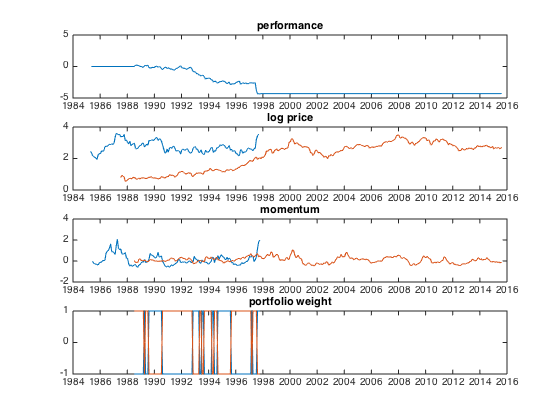 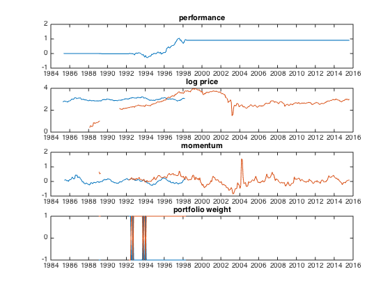 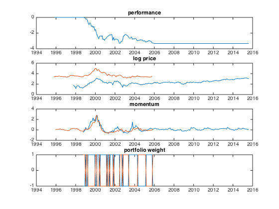 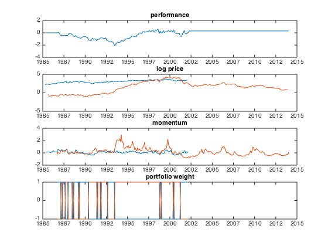
with only two securites, my momentum portfolio can run into ridiculous situation. For example, if one security drop to 0.1, I will be shorting a humongous amount of that security to be 'neutral'. But neutral with respect to what? The portfolio is capital neutral. In terms of risk, securities trading at very low price could have very little 'risk', if I define risk as permanent loss of capital.
I can check long only portfolio performance as well..
i = 1; while i <= 4 % randomly pick data from the list. index = datasample(1:1300,2,'Replace',false); % load price, calculate mom, calculate portfolio weight and calculate % portfolio return are now in functions. px = fun_load_price(history_us, equity_list_us, index); mom_ts = fun_calculate_mom(px); portfolio_weight_ts = fun_portfolio_weight(mom_ts,'longonly'); portfolio_rt_ts = fun_portfolio_return(px, portfolio_weight_ts); % let's check out the result. fun_show_result(px,mom_ts,portfolio_weight_ts,portfolio_rt_ts); snapnow; i = i+1; end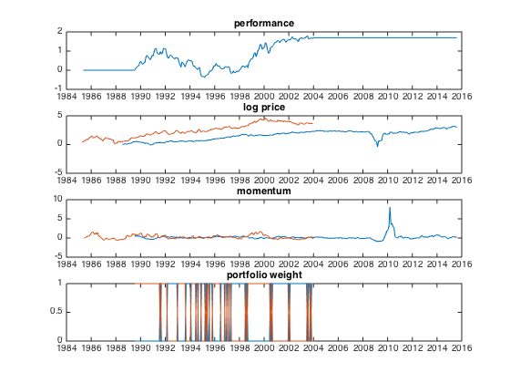 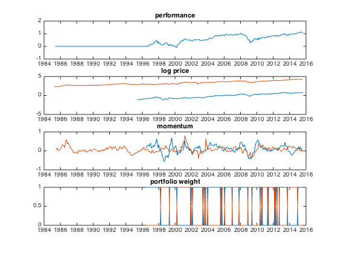 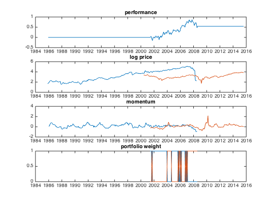 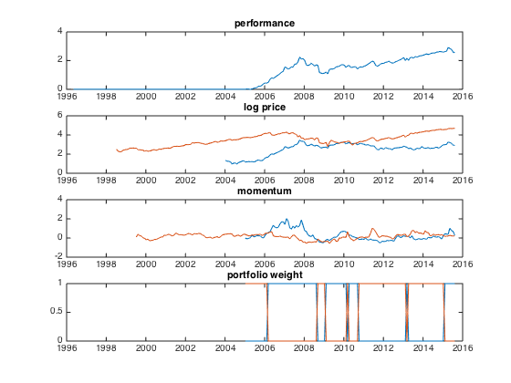
Data Integrity
Before move from 2 to N, let's check data integrity again.
index = datasample(1:1300,1300,'Replace',false); px = fun_load_price(history_us, equity_list_us, index); px_mat = fts2mat(px); rt_geo = tick2ret(px,'Method','Continuous'); rt_simple = tick2ret(px,'Method','Simple'); rt_mat_geo = fts2mat(rt_geo); rt_mat_simple = fts2mat(rt_simple); figure plot(rt_mat_geo); snapnow; plot(rt_mat_simple); snapnow;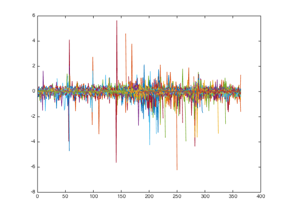 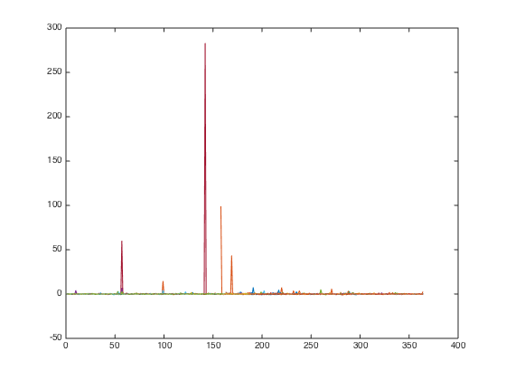
let's check out those extreme arithmetic returns.
i = find((max(rt_mat_simple)>4)); plot(log(px_mat(:,i))); snapnow; i = find((min(rt_mat_geo)<-3)); plot(log((px_mat(:,i)))); snapnow;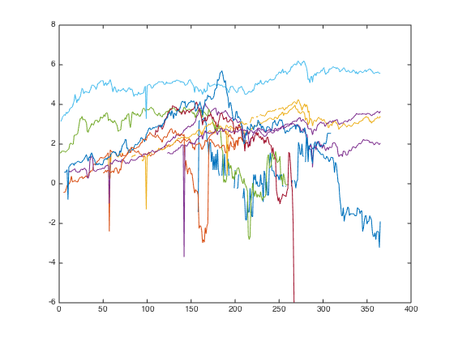 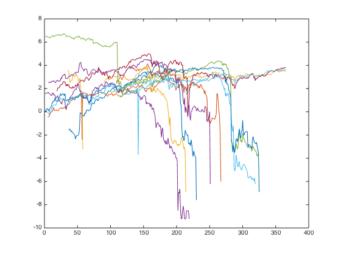
by add geometric return togather I get a picture of market volatility.
vol_ts = fints(rt_simple.dates, sqrt(12)*nanmean(abs(rt_mat_geo'))','MarketVolatility');
plot(vol_ts);
snapnow;
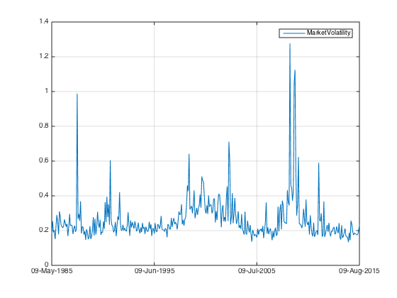 some price data bounces between two prices incessantly, let's see if we can identify them.
plot(abs(rt_mat_geo)) snapnow; plot(cumsum(abs(rt_mat_geo))) snapnow;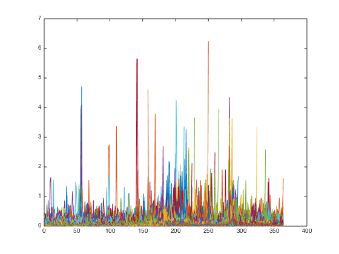 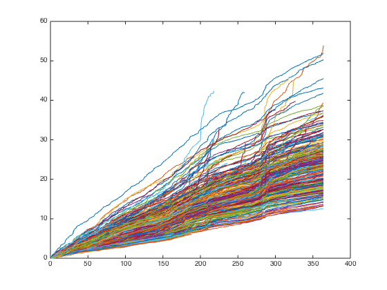
no I cannot. doesn't matter, let's keep moving.
let's write a function to clearup the data from its source.
px_clean = fun_clean_data(px); px_clean_mat = fts2mat(px_clean);
let's check the result.
i = find((max(abs(rt_mat_geo))>3)); semilogy((px_mat(:,i))); ylim([0.0001 1000]); snapnow; semilogy((px_clean_mat(:,i))); ylim([0.0001 1000]); snapnow;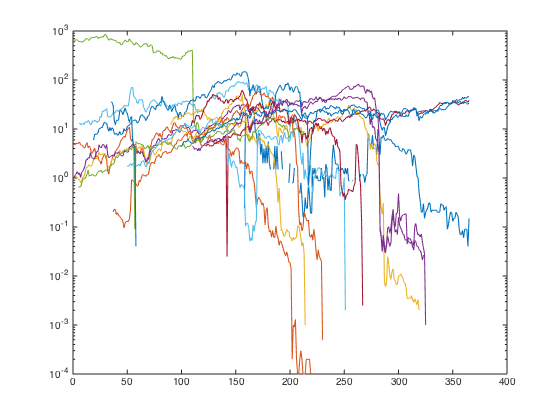 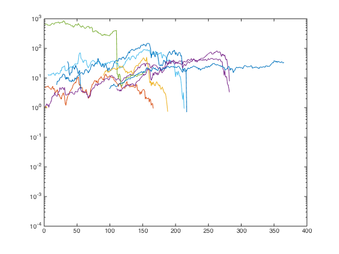
let's check the result with equal weight portfolio
portfolio_weight_ts = fun_portfolio_weight(px,'equalweight'); portfolio_rt_ts = fun_portfolio_return(px, portfolio_weight_ts); portfolio_rt_clean_ts = fun_portfolio_return(px_clean, portfolio_weight_ts); figure plot(cumsum(portfolio_rt_ts)); hold on; plot(cumsum(portfolio_rt_clean_ts)); legend('off'); snapnow;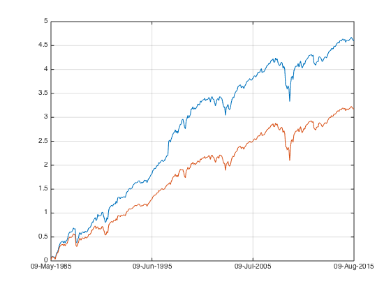
this result is comparable with s&p.
load('data_benchmark.mat','storage') spx = fints(storage{1}{1}(:,1),storage{1}{1}(:,2),'SPX','d','S&P Monthly Data'); spx = tomonthly(spx); spx_rt = tick2ret(spx); plot(cumsum(spx_rt)); legend('off'); hold off; snapnow;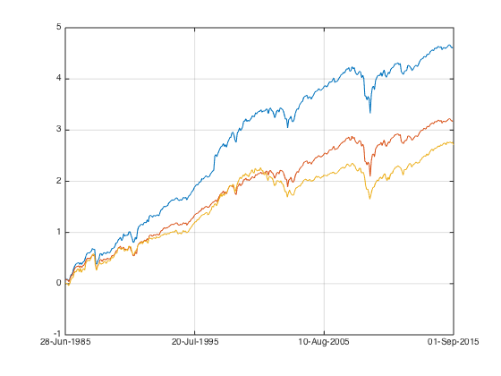
2->N
So MOM for 2 securities is trivial. What is going to happen as we increase N? let's exam.
i =1; while i<= 10 index = datasample(1:1300,2^i,'Replace',false); px = fun_load_price(history_us, equity_list_us, index); px = fun_clean_data(px); mom_ts = fun_calculate_mom(px); portfolio_weight_ts = fun_portfolio_weight(mom_ts,'longshort'); portfolio_rt_ts = fun_portfolio_return(px, portfolio_weight_ts); plot(cumsum(portfolio_rt_ts)); legend('off'); hold on snapnow; i=i+1; end hold off;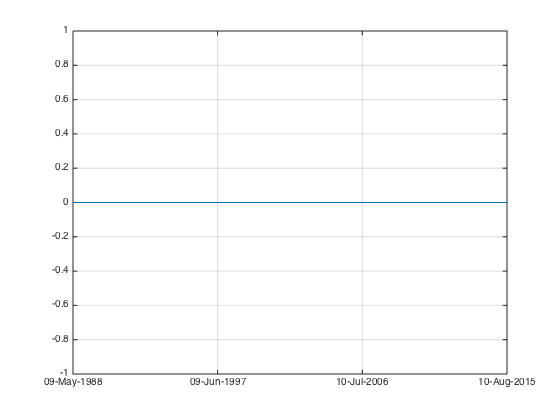 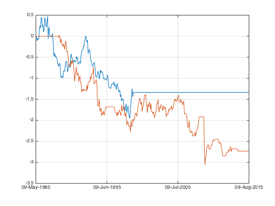 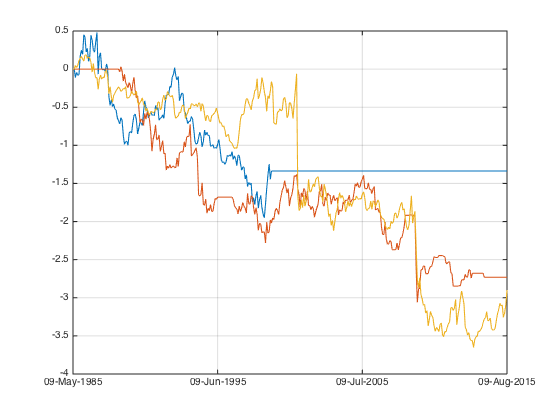 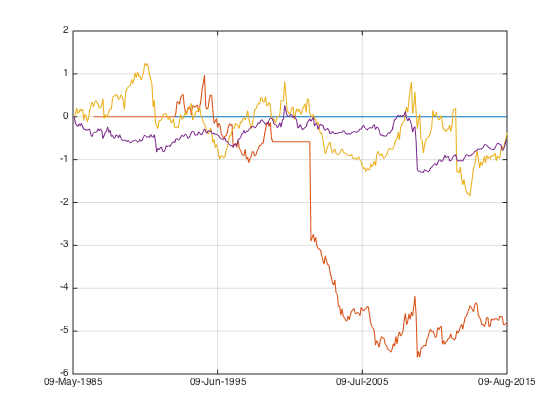 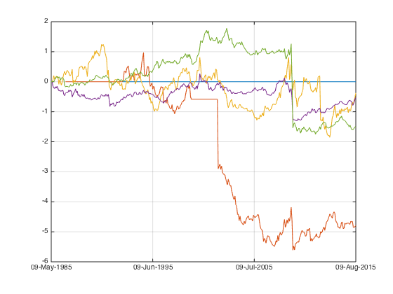 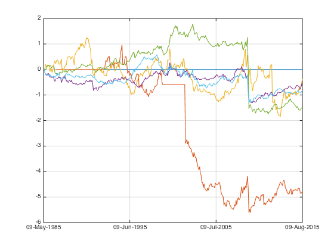 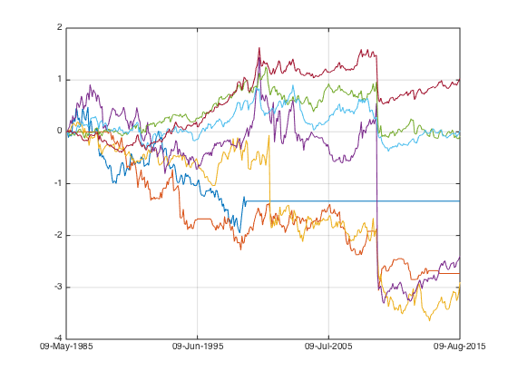 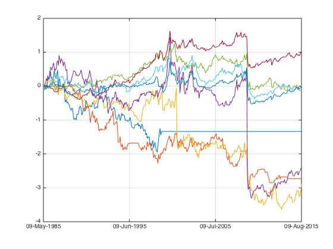 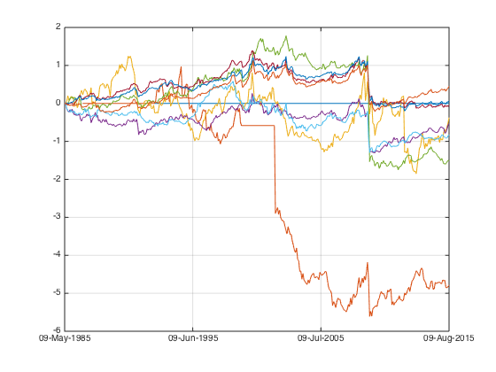 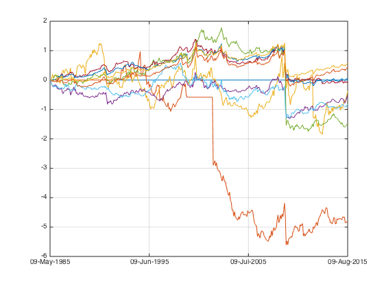
one common feature is around 2008, all of them experienced a big drawdown.
Long only
Let's take a look at long only.
i =1; while i<= 10 index = datasample(1:1300,2^i,'Replace',false); px = fun_load_price(history_us, equity_list_us, index); px = fun_clean_data(px); mom_ts = fun_calculate_mom(px); portfolio_weight_ts = fun_portfolio_weight(mom_ts,'longonly'); portfolio_weight_eq_ts = fun_portfolio_weight(px,'equalweight'); portfolio_rt_ts = fun_portfolio_return(px, portfolio_weight_ts); portfolio_rt_eq_ts = fun_portfolio_return(px, portfolio_weight_eq_ts); plot(cumsum(portfolio_rt_ts)); legend('off'); hold on; plot(cumsum(portfolio_rt_eq_ts)); legend('off'); hold off; snapnow; disp(sprintf('with %d securities' ,2^i)); sharpe_eq(i) = sqrt(12)*sharpe(fts2mat(portfolio_rt_eq_ts),0); sharpe_mom(i) = sqrt(12)*sharpe(fts2mat(portfolio_rt_ts),0); [sqrt(12)*sharpe(fts2mat(portfolio_rt_ts),0) sqrt(12)*sharpe(fts2mat(portfolio_rt_eq_ts),0)] i=i+1; end plot(sharpe_eq); hold on; plot(sharpe_mom); hold off;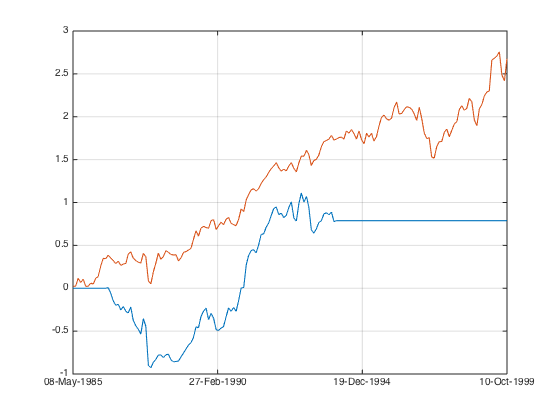
with 2 securities
ans =
0.1868 0.3089
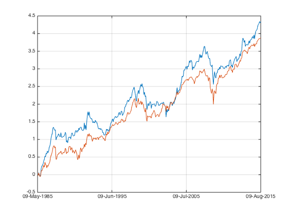 with 4 securities
ans =
0.4893 0.5051
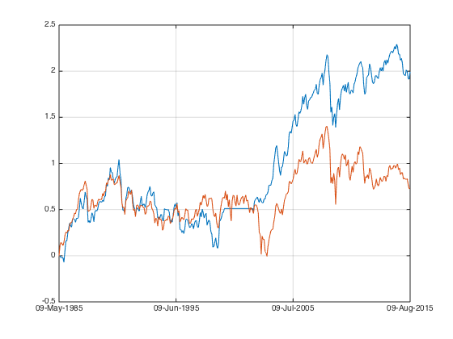 with 8 securities
ans =
0.1879 0.0790
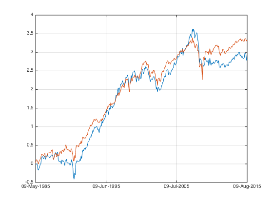 with 16 securities
ans =
0.3352 0.4617
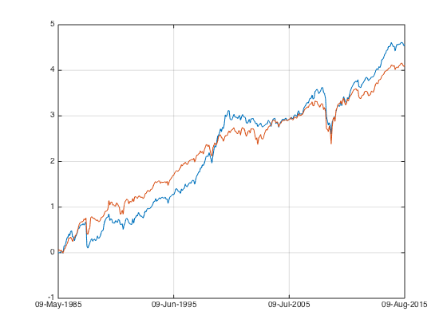 with 32 securities
ans =
0.5221 0.5048
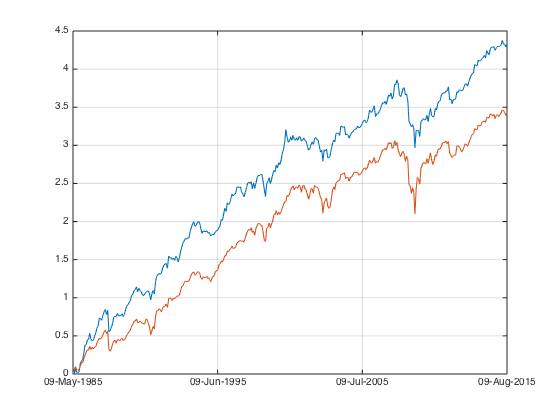 with 64 securities
ans =
0.6866 0.5805
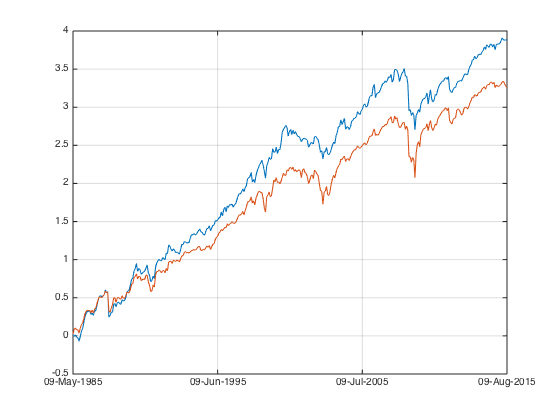 with 128 securities
ans =
0.7035 0.5515
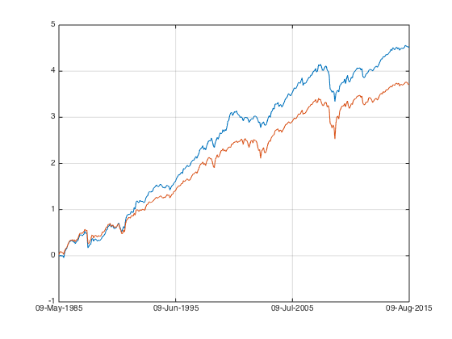 with 256 securities
ans =
0.6597 0.5884
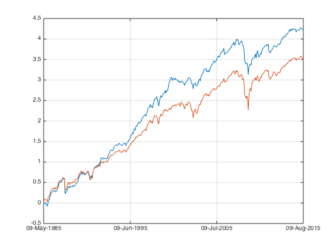 with 512 securities
ans =
0.8183 0.6446
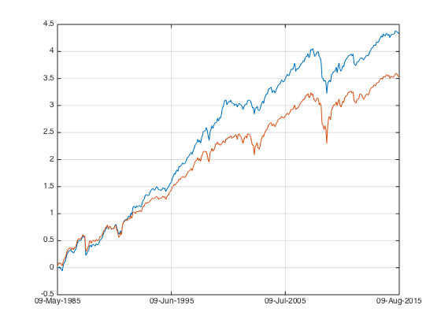 with 1024 securities
ans =
0.7873 0.6176
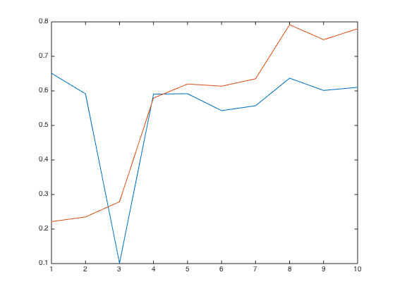 Short equal weight index
our naive longshort strategy is.. naive. let's see what happens if we change our short side to equal weight index instead. which is more close to what we can do in reality.
i =1; while i<= 10 index = datasample(1:1300,2^i,'Replace',false); px = fun_load_price(history_us, equity_list_us, index); px = fun_clean_data(px); mom_ts = fun_calculate_mom(px); portfolio_weight_ts = fun_portfolio_weight(mom_ts,'longshorteq'); portfolio_weight_eq_ts = fun_portfolio_weight(mom_ts,'equalweight'); portfolio_rt_ts = fun_portfolio_return(px, portfolio_weight_ts); portfolio_rt_eq_ts = fun_portfolio_return(px, portfolio_weight_eq_ts); plot(cumsum(portfolio_rt_ts)); legend('off'); hold on plot(cumsum(portfolio_rt_eq_ts)); legend('off'); hold off snapnow; disp(sprintf('with %d securities' ,2^i)); sharpe_longshorteq(i) = sqrt(12)*sharpe(fts2mat(portfolio_rt_ts),0); i=i+1; end hold off;

with 2 securities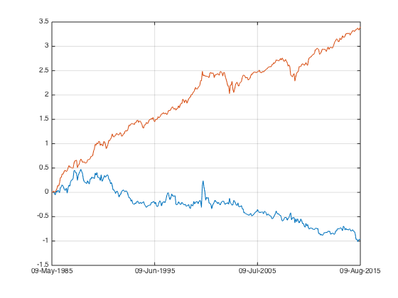
with 4 securities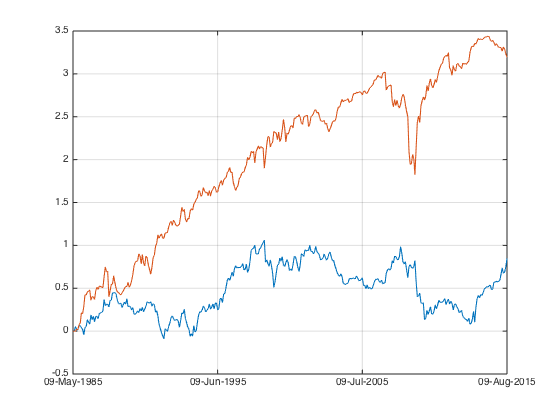
with 8 securities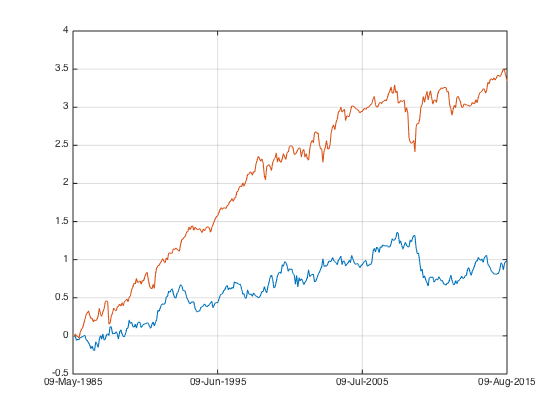
with 16 securities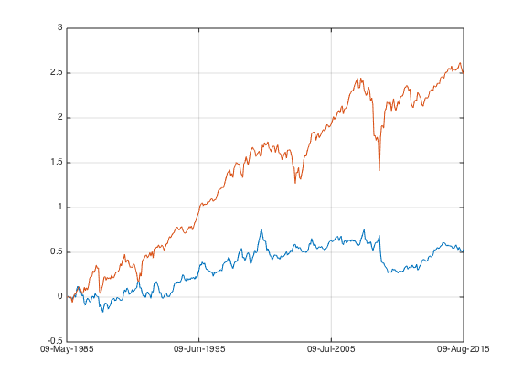
with 32 securities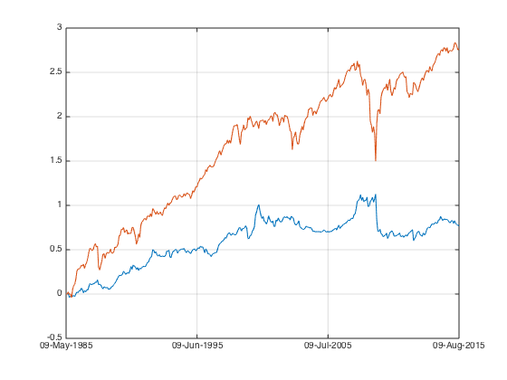
with 64 securities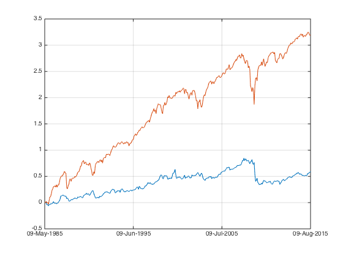
with 128 securities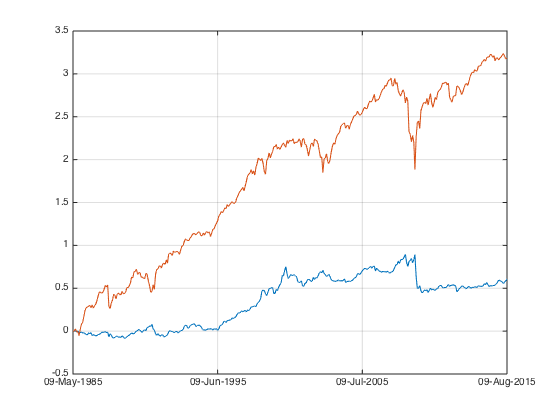
with 256 securities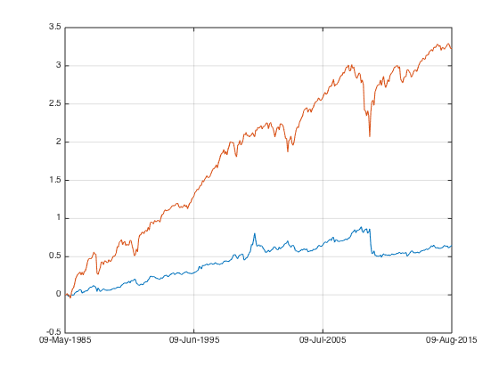
with 512 securities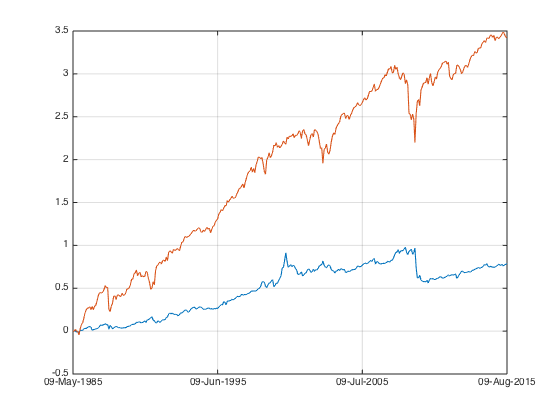
with 1024 securities
we have some more sensible result here.
plot(sharpe_longshorteq);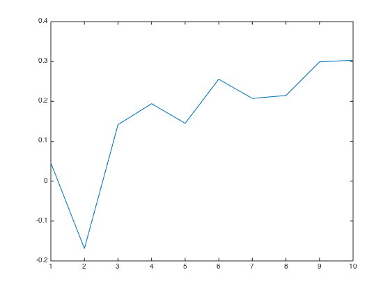
compare sharpe ratio with/ without the momentum crash in 2008:
[sqrt(12)*sharpe(fts2mat(portfolio_rt_ts(1:(end-100))),0) sqrt(12)*sharpe(fts2mat(portfolio_rt_ts),0)]
ans =
0.5059 0.3032
correlation with market
corrcoef(portfolio_rt_ts,portfolio_rt_eq_ts)
ans =
1.0000 -0.3166
-0.3166 1.0000
correlation with market without momentum crash
corrcoef(portfolio_rt_ts(1:(end-100)),portfolio_rt_eq_ts(1:(end-100)))
ans =
1.0000 -0.0817
-0.0817 1.0000
Very little indeed.
Equal weight long, short equal weight index.
What happens if instead of using score generated from momentum rank as portfolio weight, I simply choose the top M% securities and construct an equal weight portfolio? let's exam.
index = datasample(1:1300,1000,'Replace',false);
px = fun_load_price(history_us, equity_list_us, index);
px = fun_clean_data(px);
mom_ts = fun_calculate_mom(px);
first let's compare score weight with equal weight for 1000 securities. apparently score weight put much more emphasis on higher signal securities therefore higher sharpe should be expected. equal weight is a watered down version of it.
portfolio_weight_ts = fun_portfolio_weight(mom_ts,'longshorteq'); portfolio_weight_top_ts = fun_portfolio_weight(mom_ts,'topm',1); portfolio_rt_ts = fun_portfolio_return(px, portfolio_weight_ts); portfolio_rt_top_ts = fun_portfolio_return(px, portfolio_weight_top_ts); plot(cumsum(portfolio_rt_ts)); legend('off'); hold on; plot(cumsum(portfolio_rt_top_ts)); legend('off') hold off; snapnow;
compare their sharpe
[sqrt(12)*sharpe(fts2mat(portfolio_rt_ts),0) sqrt(12)*sharpe(fts2mat(portfolio_rt_top_ts),0) ]
ans =
0.3320 0.1984
let's see how the portfolio evolve as we increase N.
i = 1; while i<=10 portfolio_weight_top_ts = fun_portfolio_weight(mom_ts,'topm',0.1*i); portfolio_rt_top_ts = fun_portfolio_return(px, portfolio_weight_top_ts); plot(cumsum(portfolio_rt_top_ts)); legend('off'); hold on; % plot(cumsum(portfolio_rt_ts)); % legend('off'); % hold on; sharpe_top(i) = sqrt(12)*sharpe(fts2mat(portfolio_rt_top_ts),0); i = i+1; end snapnow; hold off; plot(sharpe_top); snapnow;
let's see each 10% percentile.
i = 1; while i<=10 portfolio_weight_top_percentile_ts = fun_portfolio_weight(mom_ts,'topmn',0.1*i,0.1*(i-1)); portfolio_rt_top_percentile_ts = fun_portfolio_return(px, portfolio_weight_top_percentile_ts); plot(cumsum(portfolio_rt_top_percentile_ts)); legend('off'); hold on; sharpe_top_percentile(i) = sqrt(12)*sharpe(fts2mat(portfolio_rt_top_percentile_ts),0); i = i+1; end hold off;
it seemss the signal is from the top few hundreds securities.
plot(sharpe_top); hold on; plot(sharpe_top_percentile); hold off;
let's zoom into those, top 400, 10 by 10.
i = 1; while i<=40 portfolio_weight_top_percentile_ts = fun_portfolio_weight(mom_ts,'topmn',0.01*i,0.01*(i-1)); portfolio_rt_top_percentile_ts = fun_portfolio_return(px, portfolio_weight_top_percentile_ts); portplot = plot(cumsum(portfolio_rt_top_percentile_ts)); legend('off'); hold on; sharpe_top_percentile_zoom(i) = sharpe(exp(fts2mat(portfolio_rt_top_percentile_ts))-1,0); portplot.Color(4) = 1 - 0.025*i; i = i+1; end hold off; snapnow; plot(sqrt(12)*sharpe_top_percentile_zoom) snapnow;
the good new is, the signal is there, especially in the first 100. the bad news is it tails off really fast.
let's look at the period after momentum crash.
mom_ts_short = mom_ts(end-70:end); px_short = px(end-70:end); i = 1; while i<=40 portfolio_weight_top_percentile_ts = fun_portfolio_weight(mom_ts_short,'topm',0.01*i); portfolio_rt_top_ts = fun_portfolio_return(px_short, portfolio_weight_top_percentile_ts); portplot = plot(cumsum(portfolio_rt_top_ts)); legend('off'); hold on; sharpe_top_percentile_post_crash(i) = sharpe(exp(fts2mat(portfolio_rt_top_ts))-1,0); portplot.Color(4) = 1 - 0.025*i; i = i+1; end hold off; snapnow; plot(sqrt(12)*sharpe_top_percentile_post_crash); snapnow;

by percentile
i = 1; while i<=40 portfolio_weight_top_percentile_ts = fun_portfolio_weight(mom_ts_short,'topmn',0.01*i,0.01*(i-1)); portfolio_rt_top_percentile_ts = fun_portfolio_return(px_short, portfolio_weight_top_percentile_ts); portplot = plot(cumsum(portfolio_rt_top_percentile_ts)); legend('off'); hold on; sharpe_top_percentile_post_crash_pct(i) = sharpe(exp(fts2mat(portfolio_rt_top_percentile_ts))-1,0); portplot.Color(4) = 1 - 0.025*i; i = i+1; end hold off; snapnow; plot(sqrt(12)*sharpe_top_percentile_post_crash_pct); snapnow;
generally positive!
let's compare the original score weight portfolio with 1) top 100 equal weight portolio 2) top 100 equal weight portfolio without the very top 10 securities in the list.
original score weight:
portfolio_weight_ts = fun_portfolio_weight(mom_ts,'longshorteq'); portfolio_rt_ts = fun_portfolio_return(px, portfolio_weight_ts); plot(cumsum(portfolio_rt_ts)); legend('off'); hold on; port_sharpe(1) = sqrt(12)*sharpe(fts2mat(portfolio_rt_ts),0);
equal weight long:
portfolio_weight_top_percentile_ts = fun_portfolio_weight(mom_ts,'topm',1); portfolio_rt_top_percentile_ts = fun_portfolio_return(px, portfolio_weight_top_percentile_ts); plot(cumsum(portfolio_rt_top_percentile_ts)); legend('off'); hold on; port_sharpe(2) = sqrt(12)*sharpe(fts2mat(portfolio_rt_top_percentile_ts),0);
top 10%, 100 securities:
portfolio_weight_top_percentile_ts = fun_portfolio_weight(mom_ts,'topmn',0.1,0.0); portfolio_rt_top_percentile_ts = fun_portfolio_return(px, portfolio_weight_top_percentile_ts); plot(cumsum(portfolio_rt_top_percentile_ts)); legend('off'); hold on; port_sharpe(3) = sqrt(12)*sharpe(fts2mat(portfolio_rt_top_percentile_ts),0);
top 10%, 100 securities without the top 5:
portfolio_weight_top_percentile_ts = fun_portfolio_weight(mom_ts,'topmn',0.1,0.005); portfolio_rt_top_percentile_ts = fun_portfolio_return(px, portfolio_weight_top_percentile_ts); plot(cumsum(portfolio_rt_top_percentile_ts)); legend('off'); hold off; port_sharpe(4) = sqrt(12)*sharpe(fts2mat(portfolio_rt_top_percentile_ts),0);
sharpes
port_sharpe
port_sharpe =
0.3320 0.1984 0.5168 0.4500
Relationship between N, volatility and sharpe ratio.
First, let's compare equal weight with long high momentum equal weight for different N.
i=1; while i<=10 index = datasample(1:1300,2^i,'Replace',false); px = fun_load_price(history_us, equity_list_us, index); px = fun_clean_data(px); mom_ts = fun_calculate_mom(px); portfolio_weight_ts = fun_portfolio_weight(mom_ts,'equalweight'); portfolio_rt_equalweight_ts = fun_portfolio_return(px, portfolio_weight_ts); plot(cumsum(portfolio_rt_equalweight_ts)); legend('off'); hold on; portfolio_weight_ts = fun_portfolio_weight(mom_ts,'longonlyeq'); portfolio_rt_longonlyeq_ts = fun_portfolio_return(px, portfolio_weight_ts); plot(cumsum(portfolio_rt_longonlyeq_ts)); legend('off'); hold off; disp(sprintf('number of securities %d', 2^i)); disp([sqrt(12)*sharpe(fts2mat(portfolio_rt_equalweight_ts),0) sqrt(12)*sharpe(fts2mat(portfolio_rt_longonlyeq_ts),0)]); snapnow; i=i+1; end
number of securities 2
0.5490 -0.1455
number of securities 4
0.4664 0.2363
number of securities 8
0.5414 0.3576
number of securities 16
0.4786 0.5596
number of securities 32
0.6213 0.6448
number of securities 64
0.6112 0.7961
number of securities 128
0.5336 0.6462
number of securities 256
0.5912 0.7467
number of securities 512
0.5837 0.7323
number of securities 1024
0.5950 0.7477

now let's exam relationship between N, vol and sharpe. I take 10 data samples.
portfolio consists of top N securities
i=1; while i<=10 index = datasample(1:1300,1000,'Replace',false); px = fun_load_price(history_us, equity_list_us, index); px = fun_clean_data(px); mom_ts = fun_calculate_mom(px); j = 1; while j<=50 portfolio_weight_ts = fun_portfolio_weight(mom_ts,'topm',0.02*j); portfolio_rt_ts = fun_portfolio_return(px, portfolio_weight_ts); port_sharpe_1(i,j) = sqrt(12)*sharpe(fts2mat(portfolio_rt_ts),0); port_vol_1(i,j) = sqrt(12)*nanstd(fts2mat(portfolio_rt_ts)); port_rt_1(i,j) = 12*nanmean(fts2mat(portfolio_rt_ts)); j = j+1; end i=i+1; end plot(port_sharpe_1'); snapnow; plot(port_vol_1'); snapnow; plot(port_rt_1'); snapnow;
breakdown into each percentile, 10 securities at each step
i=1; while i<=10 index = datasample(1:1300,1000,'Replace',false); px = fun_load_price(history_us, equity_list_us, index); px = fun_clean_data(px); mom_ts = fun_calculate_mom(px); j = 1; while j<=50 portfolio_weight_ts = fun_portfolio_weight(mom_ts,'topmn',0.01*j,0.01*(j-1)); portfolio_rt_ts = fun_portfolio_return(px, portfolio_weight_ts); port_pct_sharpe_2(i,j) = sqrt(12)*sharpe(fts2mat(portfolio_rt_ts),0); port_pct_vol_2(i,j) = sqrt(12)*nanstd(fts2mat(portfolio_rt_ts)); port_pct_rt_2(i,j) = 12*nanmean(fts2mat(portfolio_rt_ts)); j = j+1; end i=i+1; end plot(port_pct_sharpe_2'); snapnow; plot(port_pct_vol_2'); snapnow; plot(port_pct_rt_2'); snapnow;
Does increase the securities universe help?
i=1; while i<=10 index = datasample(1:1300,100*i,'Replace',false); px = fun_load_price(history_us, equity_list_us, index); px = fun_clean_data(px); mom_ts = fun_calculate_mom(px); j = 1; while j<=50 portfolio_weight_ts = fun_portfolio_weight(mom_ts,'topm',0.02*j); portfolio_rt_ts = fun_portfolio_return(px, portfolio_weight_ts); port_sharpe_3(i,j) = sqrt(12)*sharpe(fts2mat(portfolio_rt_ts),0); port_vol_3(i,j) = sqrt(12)*nanstd(fts2mat(portfolio_rt_ts)); port_rt_3(i,j) = 12*nanmean(fts2mat(portfolio_rt_ts)); j = j+1; end i=i+1; end plot(port_sharpe_3'); snapnow; plot(port_vol_3'); snapnow; plot(port_rt_3'); snapnow;
it does has some effect, but converge to the stable curve very quickly once we pass 400.
let's take a look at the period post momentum crash
i=1; while i<=10 index = datasample(1:1300,1000,'Replace',false); px = fun_load_price(history_us, equity_list_us, index); px = fun_clean_data(px); mom_ts = fun_calculate_mom(px); mom_ts = mom_ts(end-70:end); px = px(end-70:end); j = 1; while j<=50 portfolio_weight_ts = fun_portfolio_weight(mom_ts,'topmn',0.01*j,0.01*(j-1)); portfolio_rt_ts = fun_portfolio_return(px, portfolio_weight_ts); port_sharpe_4(i,j) = sqrt(12)*sharpe(fts2mat(portfolio_rt_ts),0); port_vol_4(i,j) = sqrt(12)*nanstd(fts2mat(portfolio_rt_ts)); port_rt_4(i,j) = 12*nanmean(fts2mat(portfolio_rt_ts)); j = j+1; end i = i+1; end plot(port_sharpe_4'); snapnow; plot(port_vol_4'); snapnow; plot(port_rt_4'); snapnow;
some pretty odd pattern here.
let's take a look at the top M instead of top percentile.
i=1; while i<=10 index = datasample(1:1300,1000,'Replace',false); px = fun_load_price(history_us, equity_list_us, index); px = fun_clean_data(px); mom_ts = fun_calculate_mom(px); mom_ts = mom_ts(end-70:end); px = px(end-70:end); j = 1; while j<=50 portfolio_weight_ts = fun_portfolio_weight(mom_ts,'topm',0.01*j); portfolio_rt_ts = fun_portfolio_return(px, portfolio_weight_ts); port_sharpe_5(i,j) = sqrt(12)*sharpe(fts2mat(portfolio_rt_ts),0); port_vol_5(i,j) = sqrt(12)*nanstd(fts2mat(portfolio_rt_ts)); port_rt_5(i,j) = 12*nanmean(fts2mat(portfolio_rt_ts)); j = j+1; end i = i+1; end plot(port_sharpe_5'); snapnow; plot(port_vol_5'); snapnow; plot(port_rt_5'); snapnow;
let's take a look at the period before moment crash
i=1; while i<=10 index = datasample(1:1300,1000,'Replace',false); px = fun_load_price(history_us, equity_list_us, index); px = fun_clean_data(px); mom_ts = fun_calculate_mom(px); mom_ts = mom_ts(1:end-100); px = px(1:end-100); j = 1; while j<=50 portfolio_weight_ts = fun_portfolio_weight(mom_ts,'topmn',0.01*j,0.01*(j-1)); portfolio_rt_ts = fun_portfolio_return(px, portfolio_weight_ts); port_sharpe_6(i,j) = sqrt(12)*sharpe(fts2mat(portfolio_rt_ts),0); port_vol_6(i,j) = sqrt(12)*nanstd(fts2mat(portfolio_rt_ts)); port_rt_6(i,j) = 12*nanmean(fts2mat(portfolio_rt_ts)); j = j+1; end i = i+1; end plot(port_sharpe_6'); snapnow; plot(port_vol_6'); snapnow; plot(port_rt_6'); snapnow;

Take aways
This post is rather long. In the spirit of 'keep it simple, finish it off and iterate', I will condense the result into a few points.
- I can use longonly v.s equal weight to check the existance of signal, by using sharpe plot, I can tell how much signal exists, and estimate a rough upper bound.
- by take multiple data sampling, I can get a fuller picture regarding the portfolio signal and volatility profile. In this example to 10~15% seems to be the sweet spot(balance signal robustness and strength)
- porfolio vol has a monotonous relationship wrt N, 10~15% corresponding to 7% for quiet period and 12% for long term.
- I can breakdown the data into percentiles and check from exactly where the signal presents. From long term data, I can conclude that signal mainly contained in the top 15%. This procedure help me to determine a cutoff.
- increase the size of equity universe improve the robustness of the signal
- most momentum crash data contains a strange pattern. I don't know the cause yet, but it suggests that the very top of the momentum rank doesn't corresponds to higher signal due to the disproportionally high noise presented there. Between 15~25% percentile, there actually exists a valley of signal. Despite all these, 10~15% remains the sweet spot.